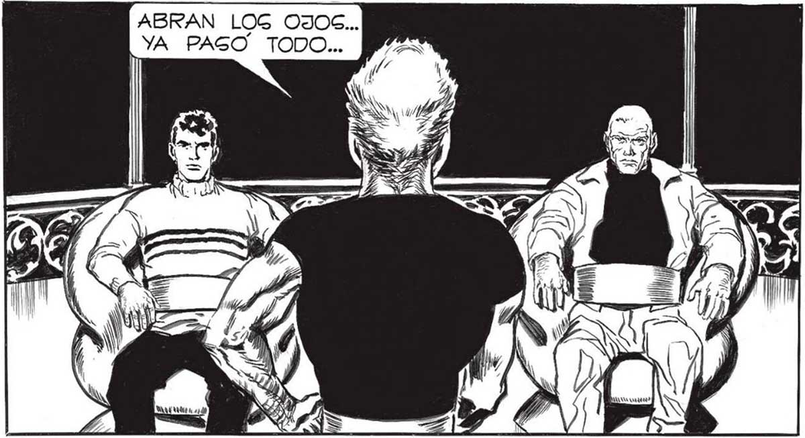
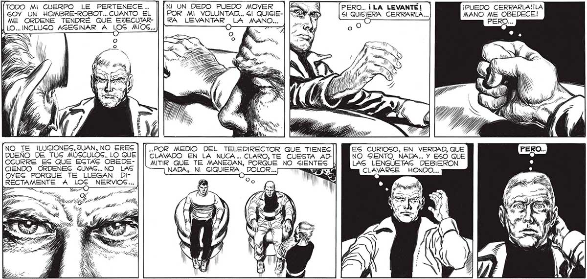

160 ABRAN LOG OJOS... TODO Sil... YA YA PAGO TODO... FASO TODO... 'NL UN DEDO PUEDO MOVER POR MI VOLUNTAD... 6! QUISIERA LEVANTAR LA MANO... a TODO Mi CUERPO LE PERTENECE... GOY UN HOMBRE-ROBOT.. CUANTO EL ME ORDENE TENDRE QUE EJECUTARLO... INCLUSO AGEGINAR A LOG MIOS... NO TE ILUGCIONES, JUAN, NO ERES DUEÑO DE TUS MÚCCULOS.. LO QUE OCURRE ES QUE EGTAS OBEDECIENDO ORDENES SUYAS... NO LAS OYES PORQUE TE LLEGAN DI.. POR MEDIO DEL TELEDIRECTOR QUE TIENES CLAVADO EN LA NUCA... CLARO, TE CUESTA ADMAITIR QUE TE MANEJAN, PORQUE NO SIENTES NADA, NI SES. DOLOR ... LO = Ni > y Y, 4 YN po Le SY, "DICE QUE YA PAGO TODO... PERO AQUÍ EGTÁN MIG MANOS... MIG. MANOG, QUE DE-| JARON DE PERTENECERME, QUE YA NO SON MIAS ... P=Ñ iS . > ZN Y 2 Lp “Es le, 1 As) SE, =y Sh / ; pe DEA AR s tar / NN hn. EN 1») | A AI Y 7 Ñ Y 4 y y Z N , ) só y » Y ÁÚ_s, O GABÍA YO LO QUE ERA EL ODIO. EN * ML) A 79 [o pra L CUERPO, CON CA- ¿y Y) E SN DA VIBRACIÓN DEL ALMA... A de SS PERO... ¡LA LEVANTÉ | Sl QUISIERA CERRARLA... , (7 PAS NN ho DAR 4 ON ES CURIOSO, EN VERDAD, QUE NO SIENTO NADA... Y ESO QUE LAS LENGUETAS DEBIERON CLAVARGE HONDO...

